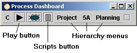
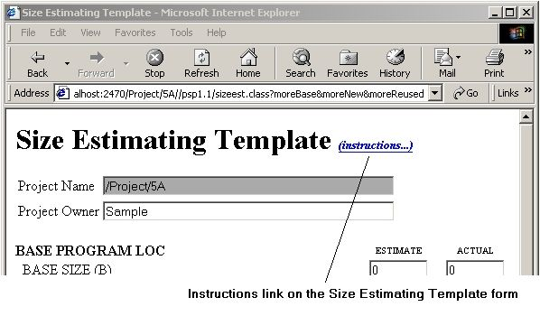
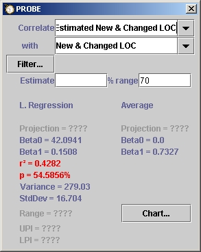
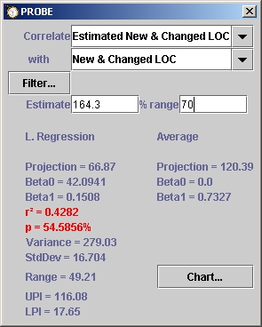
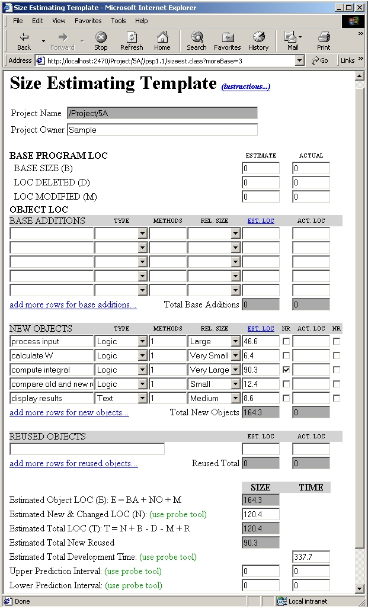
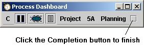

Now that the project exists, we can start the planning of our work. The PSP provides scripts for planning, development, postmortem work, etc., so let's go look at the planning script for our new PSP1.1 project. This is done by selecting our newly created project via the hierarchy menus (the dashboard will automatically select the planning phase -- the first development phase of a PSP1.1 project), then clicking the scripts button. We should also click the play button on the dashboard to start timing our planning activities. When the play button is pressed, a quiet "clicking" sound will be heard. This sound will be heard anytime the dashboard switches phases of activity while the clock is running.

The dashboard responds by bringing up the PSP1.1 planning script in a web browser. Reading through the script, we see that once we understand the requirements for program 5A, we need to do a size estimate. To guide our estimation, we can use the PROBE method. Following the PROBE method link on the planning script brings up the PROBE Estimating Script.
Reading through this script we see that once we have produced a conceptual design, we need to fill out the Size Estimating Template. The dashboard provides both the template itself an the instruction script for its use. Following the link for the Size Estimating Template brings up a dynamic HTML version of the template. For ready reference, the template has a link near the top to display the Size Estimating Template instructions form. If you click on this link, a second browser will be started so that you can have the instructions and the template side by side on your screen. For more information on the Size Estimating Template, see the Size Estimating Template help topic.

The Size Estimating Template Instructions direct us to count the base LOC and enter it at entry B if this is an enhancement of a previous program. Program 5A is a new program, so the whole base program LOC and base additions sections don't apply. We will leave those entries with their default values of 0.
New objects will be a place for most of our estimating. The student who produced the data used for this example estimated 5 new objects would be created. Their types, number of methods, and LOC estimates are entered under the new objects section of the form. The "add more rows for new objects" link will expand the form with more entries if chosen.
The student who worked this problem did not have any entries for the reused objects section of the form, so we will skip that section as well.
Moving on to the size calculation, we need to calculate the estimated new & changed LOC via the PROBE tool. The PROBE tool is accessed from the "C" menu.

The PROBE script gives several ways to calculate an estimate. We would like to know if we can use linear regression, i.e. do our data correlate well? The PROBE tool can tell us at a glance. Since we don't have any real Object LOC data yet, we can't use size estimating procedure 4A and we choose to try and correlate Estimated New & Changed LOC with actual New & Changed LOC via procedure 4B. After picking those choices from the pulldown boxes, we see immediately that our data does not correlate well enough to use the Linear Regression method. The PROBE tool shows the correlation measure (r2) in red because its value is less than 0.5. Also the probability of finding this correlation by chance alone (p) is also in red because it is greater than 50%. This means we will have to use method 4C. The PROBE tool helps here as well. The right hand column of numbers shows data for method 4C, the averaging method. It has already set B0 to 0.0, and has done the calculation of B1 for you.
Moving forward with method 4C, we need to enter our estimated object LOC from the Size Estimating Template into the PROBE tool. Entering 164.3 into the estimate blank gives us the following screen.

Our projected New & Changed LOC for this project should be 120.39. We can then use the PROBE tool to attempt a correlation between Estimated New & Changed LOC and total development time by choosing time from the second pull down box. Again, our data doesn't correlate strong enough to use the linear regression method, so we will use the data from the Average column, 337.69 minutes.
Both of these numbers get placed on the Size Estimating Template. Since we didn't do a linear regression, we can skip the UPI and LPI entries. After our planning efforts on this form it looks like the following:

When we bring up the Project Plan Summary, we see that the planning data is all entered automatically. Time to click the little done button on the dashboard and move on into design!

Note also that when the dashboard moves into a new phase while the timer is running, a little "clicking" noise is made. This little bit of feedback assures us that the timer is still running.
Next step: Designing the program
Jump to step:
START
1. Creating the project
2. Planning the project
3. Designing the program
4. Writing the code
5. Compiling the program
6. Testing the program
7. Postmortem